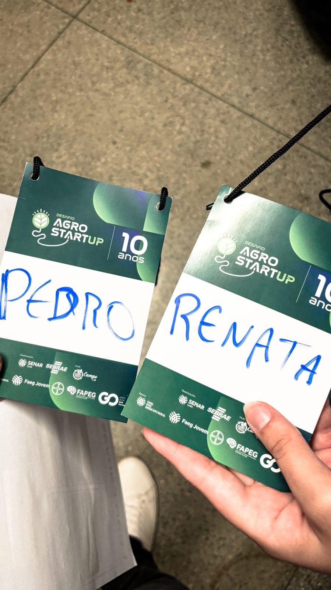
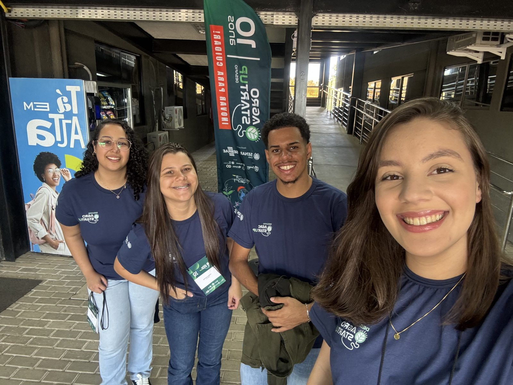
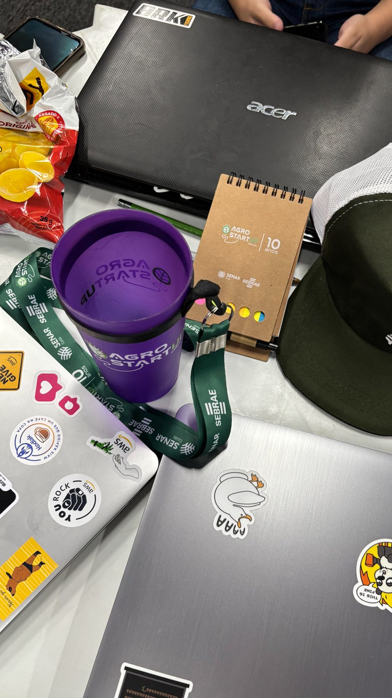
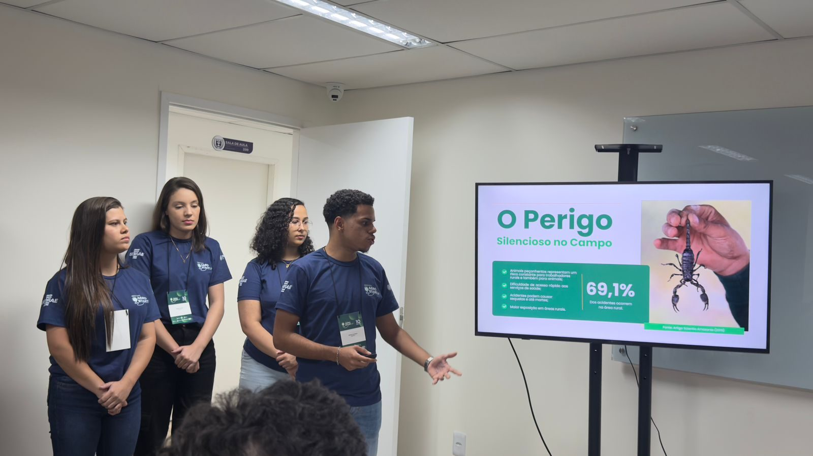
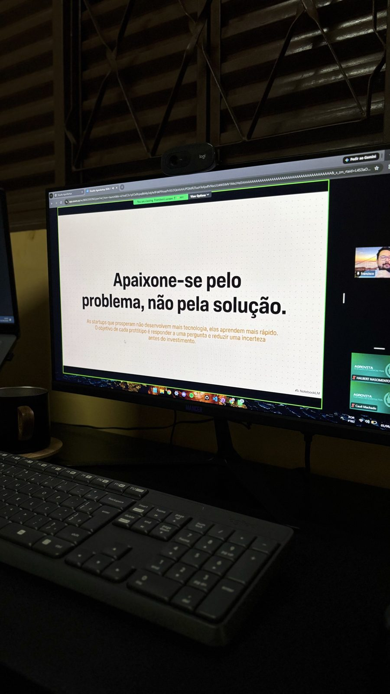
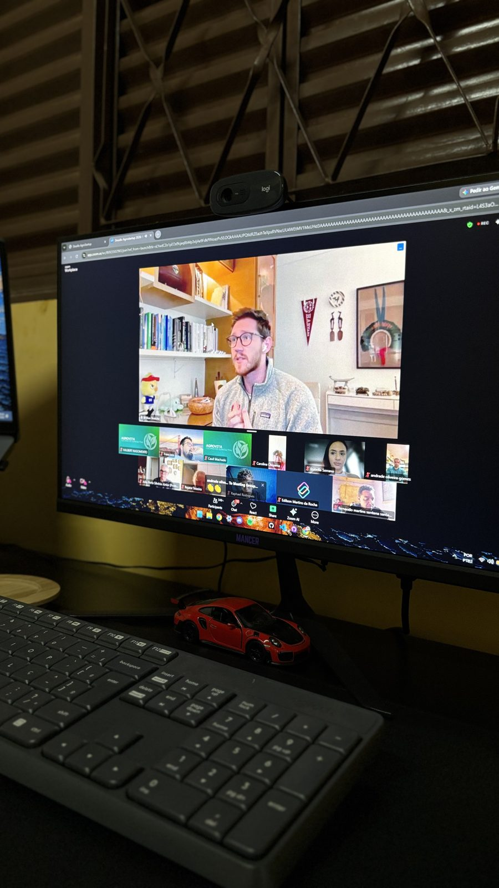

Sou líder da ZeloCamp, startup selecionada para o Desafio AgroStartup — programa de inovação do SENAR/SEBRAE Goiás que leva ideias do papo de ideia até um pitch de verdade pra investidores, passando por maratona, mentorias e aceleração. Essa é a trilha que estamos percorrendo, fase por fase.
✓
Maio · 2026
Inscrição no Desafio
↓
Inscrevemos a ZeloCamp no Desafio AgroStartup 2026, dando o primeiro passo oficial da jornada.
✓
17 · 06 · 2026
Workshop de Ideação
↓
Conhecemos de perto as principais dores dos produtores rurais e as cadeias produtivas do agro goiano. Foi aqui que idealizamos o primeiro modelo da solução que viria a se tornar a ZeloCamp.

Crachás em mãos — começava oficialmente nossa jornada no Desafio AgroStartup.
✓
27 · 06 · 2026 · Caldas Novas, GO
Maratona de Inovação
↓
Passamos o dia com startups de todo o Goiás: palestras, montagem de pitch e pitch deck do zero, e apresentação pra banca — que nos classificou pra próxima fase.

Equipe reunida em Caldas Novas para a Maratona de Inovação.

Setup de guerra: notebook, caderno e o kit oficial prontos pra maratona.

Apresentando "O Perigo Silencioso no Campo" — nosso primeiro pitch pra banca.
Workshop "Como desenvolver negócios inovadores" com Francisco Calaça (CEO da Campo Tech, Dr. em Inteligência Artificial), com a startup AI Pathology também presente. Aprendemos sobre prototipagem, testes e ferramentas de validação.

"Apaixone-se pelo problema, não pela solução" — a lição que ficou do papo com Francisco Calaça.

Workshop remoto sobre negócios inovadores, com a AI Pathology acompanhando ao vivo.
○
15 · 08 · 2026 · Remoto
Pré-Aceleração: Marketing e Redes Sociais
↓
Workshop com Adrielly Rodrigues (bióloga, especialista em Marketing pela USP), com presença confirmada da Lely, startup holandesa líder global em automação para pecuária leiteira. Em breve atualizo com fotos e aprendizados.
○
29 · 08 · 2026
Workshop: Liderança e Gestão de Pessoas
↓
Próxima etapa da pré-aceleração. Atualizo essa seção assim que acontecer.
○
12 · 09 · 2026
Workshop: Inteligência Artificial no Agronegócio
↓
Próxima etapa da pré-aceleração. Atualizo essa seção assim que acontecer.
○
26 · 09 · 2026
Workshop: Empreendedorismo e Plano de Negócio
↓
Próxima etapa da pré-aceleração. Atualizo essa seção assim que acontecer.
○
03 · 10 · 2026
Workshop: Pitch
↓
Última preparação antes do resultado da pré-aceleração. Atualizo essa seção assim que acontecer.
🔒
Outubro · 2026 · Data a definir
Demoday & Pitch em Vídeo
↓
Se a ZeloCamp for uma das finalistas da pré-aceleração, seguimos pro Demoday — apresentação final pra banca e investidores — além de um pitch em vídeo, ainda sem data definida. Torçam por nós.